FAQ Collector - Addon For WooCommerce Product Faq Manager
- Plugin Version: 1.0.8
- Plugin Last Update: 17/03/2019
- Plugin Create Date: 06/01/2015
- Web Site: http://bluewindlab.net
- Email Us: hkhan.cse@gmail.com
- Developed By: bluewindlab
- Skype: bluewindlab
If you like this plugin, please spare a minute to rate it.
https://codecanyon.net/item/faq-collector-addon-for-product-faq-manager/9992576
If you want any support, Please feel free to contact me via my profile page
https://codecanyon.net/user/xenioushk.
Plugin Overview
Finding a nice way to collect questions from user end for your WooCommerce powered site? FAQ collector addon provide you that way to get user questions directly from product page and make a great list of FAQ for your current and upcoming users.
Most of the time user want to get product related answer instantly from product page. But, sometimes they want to get more information before purchase/order a product. This addon allow users to submit there questions without any registration process.
A great feature is - administrator can send notification message once their questions got approved/updated. Checkout our plugin outlook in WordPress site-
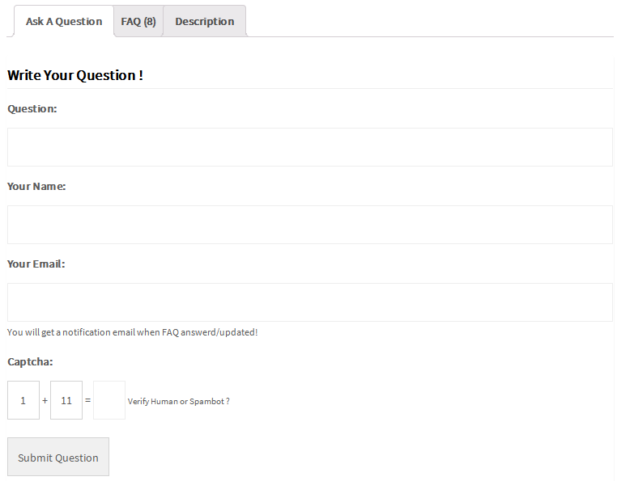
Requirements
You need at least WordPress version 4.8+ installed for this plugin to work properly. It is strongly recommended that you always use the latest stable version of WordPress to ensure all known bugs and security issues are fixed. Other requirements:
- WooCommerce Product Faq Manager Plugin
- WooCommerce Plugin
- PHP version 5.4.45 or greater.
- MySQL version 5.5.51 or greater.
Plugin Installation
To install a plugin, you must first upload the plugin files and then activate the theme. The plugin files can be uploaded in two ways:
- FTP Upload: Using your FTP client, upload the non-zipped plugin folder into the /wp-content/plugins/ folder on your server.
- WordPress Upload: Navigate to Plugins >> Add New >> Upload Plugin. Go to browse, and select the zipped theme folder. Hit "Install Now" and the theme will be uploaded and installed.
Step 01: Go to WP admin dashboard and click on Plugins >> Add New.

Step 02: Click on Upload Plugin.
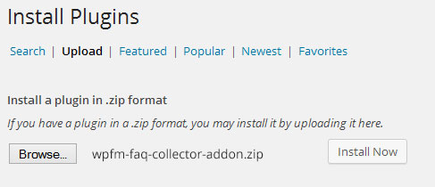
Step 03: Once plugin successfully uploaded in your server you will get an message to activate it. Click on Activate Plugin Link and plugin will be ready to use . After activating plugin, you will redirect in plugins section of wp-admin panel and display new installed plugins information in there.
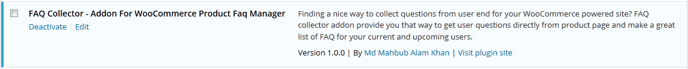
Step 04: Now you are ready to use FAQ Collector - Addon For WooCommerce Product Faq Manager! In left sidebar menu you will see a new section like following image.
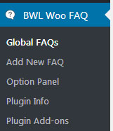
How To Operate Plugin
Once you completed installation process, plugin will automatically added a new tab in product details page. You can see the change by visiting any product page.
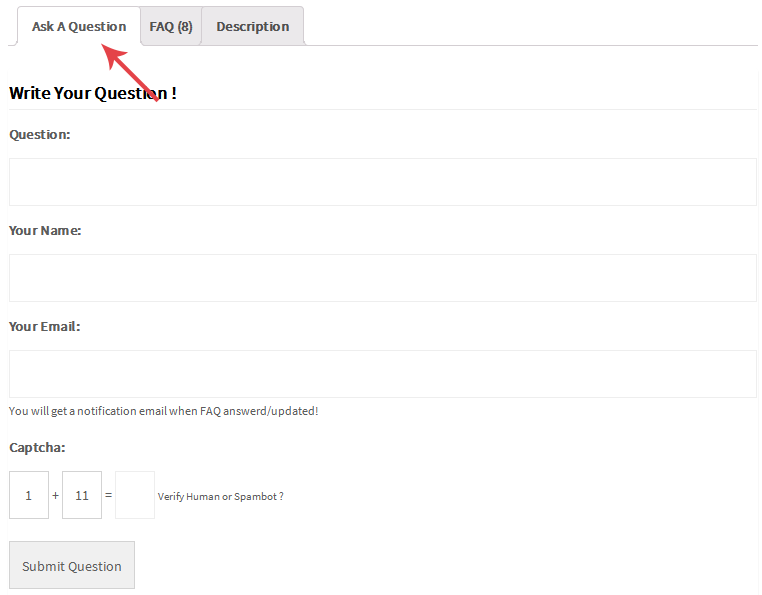
When user submit a new FAQ question, we will add this new FAQ as global item.

Next, you can add/update FAQ answer and submit a notification email to user.
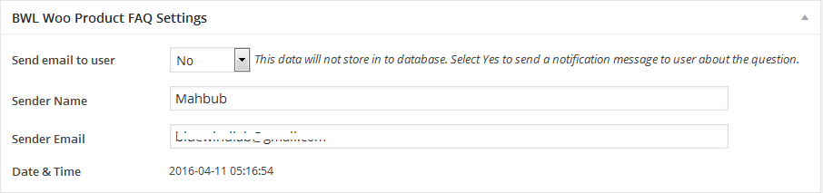
- If you want to disable "Ask A Question" tab for a specific product, then go to product edit page and in "BWL Woo FAQ Display & Theme Settings" section you will get an option called "Hide Ask A Question Tab?". Check this box and click update.
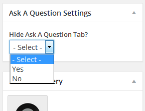
Plugin Option Panel
FAQ Form Settings Overview -
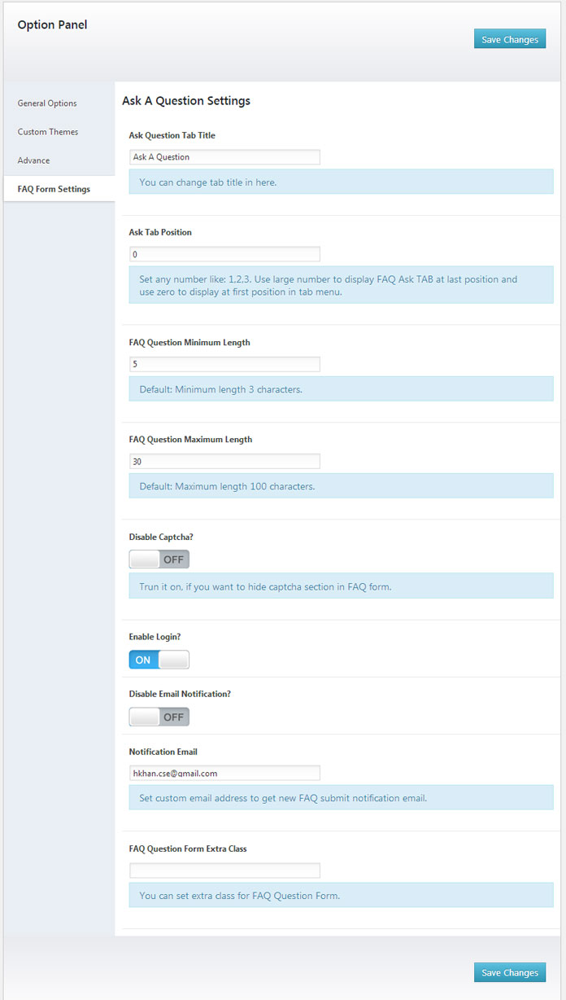
1. Ask Question Tab Title: This option allows you to set any title for Question submission tab. Default value: "Ask A Question".
2. Ask Tab Position: By default "Question Tab" will display at the last position of tab. But you can change order by setting value in "Ask Tab Position" input box. For example: If you want to set first position of tab then set value 1.
3. Disable Captcha: For protecting spam by user externally, plugin added a random math captcha. But, if you want you can disable it from here.
4. Enable Login?: If you enable this option then user need to be registered and logged in before submit FAQ question.
5. Disable Email Notification? & Notification Email: You can disable/enable email notification feature. This feature enable to send you an email when user submit a new FAQ question. You can set your/administrator email address in here to get notification email.
Video Tutorials
Translate Plugin Layouts
"FAQ Collector - WooCommerce Product FAQ Manager" offers cool translation feature. So, you can easily add this plugin any kind of website. Check following steps for translate "WooCommerce Product FAQ Manager" plugin.
- Inside of plugin "lang" folder you will get a file named "en_EN.po" file. To edit this file you need to install "poedit" software in your computer.
- Our Plugin text-domain is 'bwl-wpfmfc'
- If you are doing "localization of a plugin" for the first time, then I recommend you to check this video. http://www.youtube.com/watch?v=aGN-hbMCPMg
- Suppose you want to translate plugin in to "German" language.
So,".po" file name will be
"bwl-wpfmfc-de_DE.po". That's all. - For country code check - http://www.gnu.org/savannah-checkouts/gnu/gettext/manual/html_node/Country-Codes.html#Country-Codes
- For Language code check - http://www.gnu.org/savannah-checkouts/gnu/gettext/manual/html_node/Usual-Language-Codes.html#Usual-Language-Codes
FAQ/Troubleshoot
Ques: Does this plugin support latest WooCommerce Version?
Answer: Yes, it does.
Upgrade Notes
Please take a backup before update all files and folder.
2019, March, 17 - v 1.0.8
- Replace all files and folders.
2018, August, 05 - v 1.0.7
- Replace all files and folders.
2018, March, 03- v 1.0.6
- Replace all files and folders.
2018, January, 10- v 1.0.5
- Replace all files and folders.
2017, May, 10- v 1.0.4
- Replace all files and folders.
2016, May, 28- v 1.0.3
- Replace all files and folders.
2016, April, 12- v 1.0.2
- Replace all files and folders.
2015, May, 07 - v 1.0.1
- Replace all files and folders.
2015, January, 06 - v 1.0.0
- Initial release
Change Log
2019, March, 17 - v 1.0.8
- Added Auto RTL Switching Feature.
- Updated Plugin For WooCommerce 3.5.X.
- Improved language file.
- Improved documentation.
2018, August, 05 - v 1.0.7
- Updated Plugin For WooCommerce 3.4.X.
- Improved language file.
- Improved documentation.
2018, March, 03 - v 1.0.6
- Updated Addon For WooCommerce 3.3.X.
- Added option to set minimum and maximum no of characters for FAQ question.
- Added option to set Question form extra class.
- Update Addon Code.
- Update language file.
- Update documentation file.
2018, January, 10 - v 1.0.5
- Updated Plugin For WooCommerce 3.2.X.
- Update language file.
- Update documentation file.
2017, May, 10 - v 1.0.4
- Fixed WooCommerce 3.0 compatibility notice.
- Update language file.
- Update documentation file.
2016, May, 28- v 1.0.3
- Fixed external question submission issue.
- Added custom login box option to submit FAQ only by logged in users.
- Improved Performance.
- Improved Language File.
- Improved Documentation.
2016, April, 12- v 1.0.2
- Improved FAQ form layout. Added user name field.
- Improved Performance..
- Improved Documentation.
2015, May, 07 - v 1.0.1
- Added RTL Feature for Form Element.
- Update Documentation.
2015, January, 06 - v 1.0.0
- Initial release
Sources and Credits
- Ideas & Coded By Md Mahbub Alam Khan
- WooCommerce Plugin By WooCommerce
Our WordPress Plugins:
- 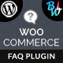 WooCommerce Product FAQ Manager
-
 Attachment Tab For Woocommerce
Attachment Tab For Woocommerce
- 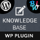 BWL Knowledge Base Manager
- 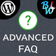 BWL Advanced FAQ Manager
-
 BWL Post To Breaking News Manager
BWL Post To Breaking News Manager
- 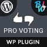 BWL Pro Voting Manager
-
 BWL Poll Manager
BWL Poll Manager
Our Templates:
- Cobbler Master - Shoe Repair and Leather Accessories Service Center
-
 Repair Geek - Laptop And Computer Fixing Service Center HTML5 Template
Repair Geek - Laptop And Computer Fixing Service Center HTML5 Template
-
 Generosity - Charity, Fundraising & Non-Profit HTML5 Template
Generosity - Charity, Fundraising & Non-Profit HTML5 Template
- Auto Repair - Maintenance and Mechanic Center HTML5 Template
-
Bicycle Fix - Bicycle Repair, Maintenance and Tune-Ups Shop HTML5 Template
- Fit Bone - Physiotherapy and Massage Therapy Center
-
 Mind Trainer - Psychology and Counseling Center HTML5 Template
Mind Trainer - Psychology and Counseling Center HTML5 Template
-
 Senior Care - Senior Citizens & Elders Support HTML5 Template
Senior Care - Senior Citizens & Elders Support HTML5 Template
-
 Greenlife - Nature & Environmental Non-Profit HTML5 Template
Greenlife - Nature & Environmental Non-Profit HTML5 Template
-
 Knowledge Desk - Responsive Knowledgebase HTML5 Template
Knowledge Desk - Responsive Knowledgebase HTML5 Template
 Senior Care - Elder Citizen Support WordPress Theme
Senior Care - Elder Citizen Support WordPress Theme
 Wish - Charity WordPress Theme
Wish - Charity WordPress Theme
 Appeal – Fully Functional Petition WordPress Theme
Appeal – Fully Functional Petition WordPress Theme